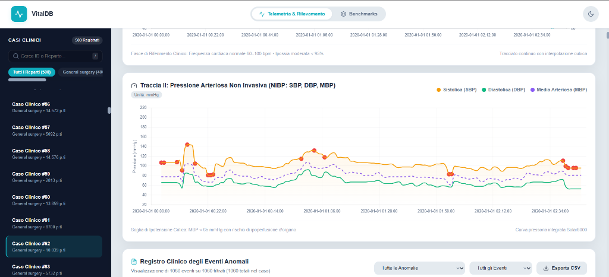
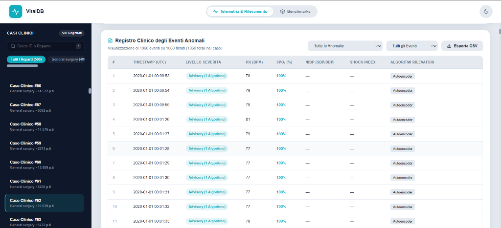

Anomaly detection su dati biometrici
Capitolo 01 Il Problema Clinico & I Dati VitalDB
Monitoraggio fisiologico in sala operatoria su 500 interventi reali: tra disturbi elettrici dei sensori e campionamento asincrono.
Contesto clinico: volume elevato, bassa qualità del dato grezzo
Il monitor di sala operatoria raccoglie milioni di punti, ma oltre la metà del dato grezzo è inutilizzabile senza bonifica.
Dataset VitalDB: sorgente clinica e asincronia di campionamento
Cosa registra il monitor nello stesso arco di 5 minuti (300 secondi): Disallineamento temporale tra sensore continuo al dito e bracciale gonfiabile
I modelli matematici richiedono tutti i 5 segnali sincronizzati al secondo. 500 casi bilanciano rigore statistico e sostenibilità dei tempi di training.
Capitolo 02 Architettura Dati & Pipeline Medallion
Dall'ingestione raw (Bronze) alla bonifica fisiologica e temporale (Silver), fino alle serie storiche compresse su MongoDB 8.0 (Gold).
Flusso operativo: dal dato grezzo alla segnalazione clinica
Cinque passi essenziali: raccogliamo i dati grezzi, li puliamo dai disturbi, li salviamo in modo efficiente e rileviamo le anomalie per i medici.
Raccolta
Scaricamento sicuro e congelamento del dato grezzo.
ParquetPulizia
Filtro artefatti e allineamento dei segnali al secondo.
PandasArchiviazione
Database per serie storiche compresso e ultra-veloce.
MongoDB 8.0Allarmi
Regole cliniche d'emergenza + intelligenza artificiale.
Scikit · PyTorchInterfaccia
Dashboard interattiva e notifiche chiare in sala.
FastAPI · DockerArchitettura Medallion: progressiva raffinazione
I dati clinici vengono raffinati attraverso tre livelli: si parte dall'archivio originale grezzo per arrivare al database compresso ed ottimizzato per le query mediche.
Bronze
Storico delle informazioni recuperate dagli strumenti di misurazione. È il set di dati grezzo ed originale.
Parquet · 33,95 MBSilver
Vengono tagliati i valori fisiologicamente inverosimili, riempite le celle vuote e catalogati i reparti ospedalieri.
Pandas · 47,25 MBGold
I dati ripuliti vengono organizzati in serie storiche ad alta efficienza. È l'archivio definitivo per analisi e query veloci.
MongoDB 8.0 · 7,45 MB (−84%)Livello Bronze: acquisizione sicura e dati originali
Salviamo i dati esattamente come escono dai monitor della sala operatoria, senza toccare una virgola.
Livello Silver: rilevamento dei valori fisiologicamente anomali
Cavi staccati e disturbi elettrici generano valori che un essere umano vivente non può avere.
| Parametro | Range Fisiologico Accettabile |
|---|---|
| Frequenza cardiaca (HR) | 20 – 250 bpm |
| Ossigenazione (SpO₂) | 50 – 100 % |
| Pressione sistolica (SBP) | 40 – 250 mmHg |
| Pressione diastolica (DBP) | 10 – 180 mmHg |
| Pressione media (MBP) | 20 – 220 mmHg |
Esempio pratico: cosa succede se un sensore segna per sbaglio 290 mmHg
Livello Silver: gestione dei dati mancanti per tipologia di segnale
Non tutti i segnali sono uguali: trattiamo ogni strumento secondo la sua natura clinica.
Livello Gold: archiviazione Time Series ad alta efficienza
{
"timestamp": ISODate("2020-01-01T08:15:30Z"),
"metadata": {
"case_id": 1,
"department": "General surgery",
"age": 64, "sex": "M"
},
"metrics": {
"Solar8000_HR": 72.0,
"Solar8000_PLETH_SPO2": 98.0
// Bracciale fermo in questo secondo: nessun campo salvato
},
"quality_flags": {
"HR_outlier": false,
"nibp_age_s": 14.0
}
}
Con MongoDB 8.0 archiviamo milioni di secondi occupando una frazione minuscola dello spazio.
Valutazione prestazionale: riduzione dello spazio e latenza delle query
Capitolo 03 Controllo Qualità & Data Governance
Come ci assicuriamo che nel database entrino solo pazienti completi, senza errori e subito pronti da consultare per i medici.
Architettura ibrida: separazione dei controlli tra Python e MongoDB
Le Time Series impacchettano i secondi in bucket colonnari (−84% spazio), rinunciando alla validazione BSON sul singolo documento.
Se salta la corrente mentre salviamo i 10.000 secondi di un paziente, MongoDB non esegue il rollback e lascia il paziente caricato a metà.
1. Contro l'assenza di $jsonSchema: Python valida ogni secondo in RAM prima della scrittura, mentre MongoDB applica $jsonSchema sulla collezione registry (slide succ. →).
2. Contro l'assenza di transazioni: salviamo in 2 fasi (loading → committed), rendendo visibili i pazienti solo a scrittura completata.
La collezione registry e la validazione $jsonSchema
{
"case_id": 1, // Obbligatorio (Numero intero)
"status": "committed", // Solo: loading | committed | failed
"record_count": 11542, // Quanti secondi sono stati salvati
"loaded_at": ISODate("2026-06-15T14:22:10Z"),
"provenance": { // Ricetta usata per pulire il paziente
"run_id": "run_20260615_142000",
"max_gap_seconds": 5.0,
"nibp_staleness_limit_s": 300.0,
"sampling_interval_s": 1.0
}
}
Prima di salvare i segnali clinici nella Time Series, ogni paziente deve superare il controllo del registry: se la sua scheda non rispetta le regole, il database rifiuta l'inserimento.
Protocollo di scrittura a due fasi: garanzia di integrità dei dati
Per evitare dati incompleti in caso di interruzione (Errore 263 sulle Time Series), Python aggiorna il campo status del registry attraverso quattro passaggi.
Verifica in RAM
Python verifica in memoria che tutte le rilevazioni siano conformi; se non lo sono, le scarta prima di accedere al database.
validate_recordsLoading
Registra lo stato "in caricamento" nel registry: durante la scrittura il paziente resta invisibile alla dashboard.
status: "loading"Committed
Completata la scrittura dell'ultimo secondo, l'intervento è integro al 100% e diventa consultabile.
status: "committed"Pulizia Crash
In caso di arresto anomalo, al riavvio il sistema individua i record in loading e rimuove i dati parziali.
recover_incomplete_loads
Capitolo 04 Rilevamento Anomalie & Modelli di Calcolo
Architettura ibrida di sorveglianza: regole cliniche a soglia deterministica affiancate da Isolation Forest e Autoencoder LSTM a finestra temporale.
Architettura di rilevamento: quattro metodi complementari
Shock Index (SI)
Rapporto semplice tra battito e pressione per scovare le crisi.
Pressione + Saturazione basse
Doppio allarme: il sangue non circola e i tessuti non respirano.
Isolation Forest
Isola all'istante le combinazioni di valori mai viste prima.
Autoencoder LSTM
Impara l'andamento normale dei tracciati nel tempo.
Autoencoder LSTM: imparare la normalità per scovare le crisi
La rete legge i tracciati (battito, pressione, ossigeno) negli ultimi 30 secondi.
Comprime tutti i dati in un piccolo pacchetto di 32 numeri chiave.
Dal riassunto prova a ridisegnare il tracciato originale esatto.
Impara a memoria solo la salute
La rete è stata addestrata solamente su pazienti sani e stabili. Sa ricostruire alla perfezione solo ciò che è normale.
Leggero e immediato in sala
Duplicare le finestre scorrevoli da 30s su tutti i 5,4 milioni di secondi occuperebbe ~5 GB: con viste virtuali senza copie si allena su 15.000 finestre (14 MB) e valuta tutto il resto a blocchi.
Come diamo l'allarme: la regola del canale peggiore
In sala operatoria basta che crolli anche un solo parametro vitale per rischiare la vita del paziente.
Non facciamo la media: i tratti piatti della pressione e i canali sani hanno errore quasi zero e coprirebbero eventuali anomalie su cuore o ossigeno. Valutiamo i 30 secondi segnale per segnale e prendiamo il peggiore: basta un parametro fuori norma per alzare subito l'allarme.
7 segnali sono perfetti e 1 è disastroso. La media fa sembrare tutto tranquillo. Il monitor resta zitto.
Isola subito l'ossigeno che sta crollando ed emette l'allarme avvisando i medici su quale organo intervenire.
I risultati: i modelli a confronto con le regole mediche
| Modello | Precision | Recall | F1-Score | PR-AUC |
|---|---|---|---|---|
| Tirare a indovinare (Baseline) | — | — | — | 0,048 |
| Isolation Forest | 0,105 | 0,108 | 0,107 | 0,084 |
| Autoencoder LSTM | 0,093 | 0,096 | 0,095 | 0,064 |
Accordo tra metodi: quattro occhi diversi sullo stesso paziente
Come lavorano insieme regole mediche e intelligenza artificiale: Ognuno controlla un aspetto diverso del paziente, senza ripetersi
| METODO | Shock | Ipotens. | Alberi (IF) | Rete (LSTM) |
|---|---|---|---|---|
| Shock Index | 1,00 | 0,02 | 0,06 | 0,05 |
| Ipotensione | 0,02 | 1,00 | 0,04 | 0,04 |
| Alberi (IF) | 0,06 | 0,04 | 1,00 | 0,36 |
| Rete (LSTM) | 0,05 | 0,04 | 0,36 | 1,00 |
I parametri sono stabili e prevedibili. La rete li ridisegna facilmente: nessun disturbo per i medici.
La rete sbaglia a ridisegnare e suona l'allarme. Non scegliamo 4,79 a mano: mettiamo in fila tutti gli errori e tagliamo al 95° percentile (solo sul 5% peggiore).
I due sistemi non si danno fastidio a vicenda: le regole offrono la certezza nelle emergenze, mentre i modelli regalano il tempo prezioso per prevenire la crisi.
Capitolo 05 Sistema Software & Dashboard Clinica
Piattaforma clinica reattiva a microservizi: backend FastAPI, storage MongoDB e dashboard interattiva con HUD paziente, grafici continui e audit trail.
Come è costruito il sistema: tre livelli indipendenti e coordinati
HTML5 nativo, Chart.js e CSS. Zero ritardi e massima fluidità su qualsiasi schermo.
Server Python che calcola all'istante sia le regole mediche che i modelli di AI.
Serie storiche compresse in bucket. 18 millisecondi per caricare un intero intervento.
Niente si blocca a vicenda
Ogni parte vive nella propria scatola (container Docker). Se domani vogliamo cambiare i grafici o testare un nuovo algoritmo, il database dei pazienti rimane intatto e al sicuro.
Si installa ovunque in un attimo
Non serve configurare server complessi: un solo comando prepara il database, accende i modelli matematici e apre la pagina web per i medici.
La dashboard per il medico: quadro del paziente e allarmi a colpo d'occhio

Un'interfaccia pulita e immediata per controllare cosa succede al paziente senza perdersi in schermate complicate.
I grafici continui: battito cardiaco e ossigeno insieme

Il medico può scorrere ore di operazione con il mouse e individuare all'istante i momenti critici.
La pressione arteriosa: misure del bracciale e linea di pericolo

Il grafico evidenzia la pressione media e avvisa se l'ultima misura è troppo vecchia per considerarsi affidabile.
Registro degli allarmi: elenco ordinato e scaricamento dati

Ogni secondo di allarme viene registrato per permettere ai medici di rivedere l'intervento a bocce ferme.
Capitolo 06 Risultati di Progetto & Sviluppi Futuri
Sintesi prestazionale su 5,4 milioni di secondi: -84% storage, 38 test unitari superati, limiti clinici e prospettive di streaming real-time.
I risultati finali: un sistema leggero, rapido e sicuro
Più di 1.500 ore di interventi chirurgici veri processati dall'inizio alla fine senza perdere neanche un dato.
La rete neurale si accorge che il paziente sta peggiorando prima ancora che scattino i vecchi allarmi fissi.
Pulizia automatica dei dati, controlli rigorosi e salvataggio sicuro che non lascia mai file a metà.
Le regole mediche fanno da paracadute immediato per le emergenze improvvise; l'intelligenza artificiale scova i peggioramenti lenti e silenziosi prima che sia troppo tardi.
Limiti attuali e prossimi passi del progetto
Cosa manca rispetto alla sala vera
Come farlo crescere